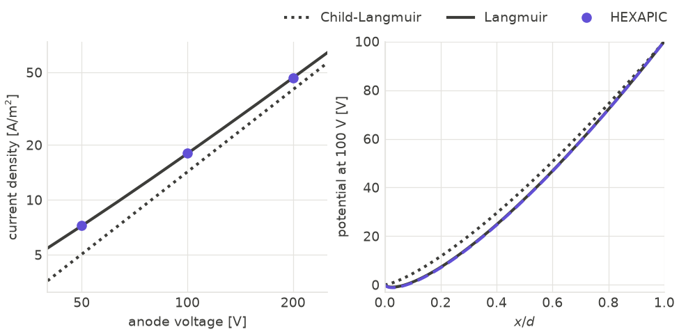

Space-charge-limited diode#
A cathode emits electrons into a vacuum gap, and an anode at the voltage \(+V\) collects them. The charge of the electrons in the gap lowers the potential in front of the cathode. When the cathode emits more than the gap can carry, a potential minimum forms there, the slower electrons return to the cathode, and the current at the anode no longer depends on the emission: it is limited by the space charge. The case tests the injection of a beam, the absorption at the walls and the field solve with a biased wall.
Setup#
Domain |
gap \(d = 12.8\) mm along \(x\), 0.4 mm along \(y\) (periodic) |
Grid |
256 × 8 cells of \(\Delta x = 50\) µm; the problem is 1-D along \(x\) |
Walls |
cathode at \(x = 0\), grounded; anode at \(x = d\), biased at \(V = 100\) V ( |
Emission |
a |
Limit |
Child–Langmuir current density \(J_{CL} = 14.25\ \mathrm{A/m^2}\) at 100 V: the cathode emits 8.4 times as much |
Particles |
weight 576: about \(8\times10^{5}\) macro-particles in the steady state, 1755 injected per step |
Time step |
\(3.37\times10^{-12}\) s: the fastest electron crosses 0.4 cells per step |
Run |
28 800 steps, 15 transit times of an electron across the gap (6.5 ns each); output every 60 steps over the last 10, no charge smoothing |
Field solver |
the direct strip solver, as |
Cost |
about 80 s on one NVIDIA A100 |
Running#
python examples/walls/child_langmuir/case.py runs/child_langmuir
build/HEXAPIC runs/child_langmuir/case.toml > runs/child_langmuir/run.log
python examples/walls/child_langmuir/analyze.py runs/child_langmuir
case.py writes runs/child_langmuir/case.toml; with --run it also runs
build/HEXAPIC on it (--hexapic names another binary). case.toml beside
the script is the same case. analyze.py reads the series and the log of
the run, run.log: its [WallFlux] line has the number of electrons that
the anode absorbed. It prints the numbers below and writes results.json
and the figure into the run’s directory. Without a log it takes the current
from the meshes.
Option of |
|
|---|---|
|
the voltage of the anode [V]; the time step and the weight follow it |
|
run HEXAPIC on the case |
|
write the frames that HEXAPIC / VIZ shows during the run |
Results#
Current against theory#
Electrons that leave the cathode at rest carry at most the Child–Langmuir current density
The electrons of this case leave the cathode with a half-Maxwellian of the temperature \(T\), as those of a hot cathode do, and the limit is higher. Langmuir’s theory gives it. The potential has a minimum \(\phi_m < 0\) at \(x_m\). Electrons with less energy than \(-e\phi_m\) return to the cathode, and the current density \(J = J_s \exp(e\phi_m/T)\) passes. With \(\eta = e(\phi - \phi_m)/T\) and \(\xi = (x - x_m)/\ell\), Poisson’s equation is
with the upper sign beyond the minimum and the lower sign before it, and
\(\eta = d\eta/d\xi = 0\) at the minimum. The solution must reach
\(\eta = \ln(J_s/J)\) at the cathode and \(\eta = \ln(J_s/J) + eV/T\) at the
anode, a distance \(d\) apart. This condition gives \(J\). analyze.py
integrates the equation and solves for \(J\); for \(T \to 0\) the result is
\(J_{CL}\).
The measured current density is the charge of the electrons that the anode
absorbed over the last 10 transit times, per time and area. The runs at
50 V and 200 V are the same case with --voltage:
for v in 50 100 200; do
python examples/walls/child_langmuir/case.py runs/child_langmuir_$v --voltage $v
build/HEXAPIC runs/child_langmuir_$v/case.toml > runs/child_langmuir_$v/run.log
done
python examples/walls/child_langmuir/analyze.py runs/child_langmuir_*

Left: the current density at the anode against its voltage. Right: the potential across the gap at 100 V; HEXAPIC is the dashed line on that of Langmuir’s theory.
\(V\) [V] |
50 |
100 |
200 |
|---|---|---|---|
HEXAPIC, \(J\) [A/m²] |
\(7.2553 \pm 0.0001\) |
\(18.028 \pm 0.001\) |
\(46.844 \pm 0.002\) |
Langmuir’s theory, \(J\) [A/m²] |
7.208 |
17.959 |
46.767 |
Langmuir’s theory, emission at \(\Delta x/2\) [A/m²] |
7.287 |
18.091 |
47.016 |
Child–Langmuir, \(J_{CL}\) [A/m²] |
5.037 |
14.245 |
40.292 |
HEXAPIC over Langmuir’s theory |
1.0066 |
1.0038 |
1.0017 |
The uncertainty is the standard error of the mean over ten blocks of output steps. The current is steady: its scatter between the output steps is 0.1 %.
HEXAPIC’s current is 0.2 % to 0.7 % above Langmuir’s theory. The difference comes from the beam, which starts its particles half a cell in front of the cathode. With the emission plane at \(\Delta x/2\) the theory gives the third row, and HEXAPIC is 0.4 % below it. A run with 512 cells along \(x\) at an emission of \(3\,J_{CL}\) gave 0.21 % above the theory, where 256 cells gave 0.33 %.
Over the three voltages the current grows as \(V^{1.345}\), and Langmuir’s theory gives \(V^{1.349}\). The exponent 3/2 of the Child–Langmuir law is the limit of a cold emission, \(T \ll eV\). At \(T = 0.5\) eV the current is 16 % to 44 % above \(J_{CL}\).
The emission must have a thermal spread for this comparison. A beam of cold electrons with a drift of 1 eV and a current density of \(3\,J_{CL}\), at 100 V, did not reach a steady state: the potential minimum oscillated, the current at the anode varied by 13 % (standard deviation) between the output steps, and its mean was \(1.15\,J_{CL}\).
Potential against theory#
For electrons that start at rest the potential is \(\phi(x) = V (x/d)^{4/3}\). Langmuir’s solution above gives the potential with the minimum in front of the cathode. The measured potential is the mean over \(y\) and over the output steps.
At 100 V |
HEXAPIC |
Langmuir’s theory |
emission at \(\Delta x/2\) |
|---|---|---|---|
Potential minimum \(\phi_m\) [V] |
\(-1.16\) |
\(-0.95\) |
\(-1.20\) |
Its position \(x_m\) [mm] |
0.35 |
0.34 |
0.36 |
Largest \(\lvert\phi - \phi_\mathrm{theory}\rvert / V\) |
0.0025 |
0.0010 |
The potential follows Langmuir’s solution within 0.25 % of \(V\). The largest difference is at the minimum, which is 0.2 V deeper than in the theory because the emission plane is half a cell inside the gap. The profile \(V (x/d)^{4/3}\) differs from the measured one by up to 5 % of \(V\).
Files#
|
the case as a PICMI script |
|
the case as |
|
Langmuir’s theory, the current and the potential, from one or several runs |
|
the figure above, as |
|
the sources of the theory |
The script#
case.py
#!/usr/bin/env python3
"""child_langmuir: a planar vacuum diode at the space-charge limit.
python case.py DIR # DIR/case.toml
python case.py DIR --run # and HEXAPIC on it (build/HEXAPIC; --hexapic: another), into DIR/output
python case.py # the case.toml beside this script
A grounded cathode at x = 0 and an anode at x = D, biased at +V; y is
periodic (the problem is 1-D along x). A beam emits electrons at the
cathode as a hot cathode does: a half-Maxwellian of the temperature T_C, at
the current density EMISSION, several times the Child-Langmuir current
density of the gap. Their charge forms a potential minimum in front of the
cathode that turns the excess back, and the anode collects the
space-charge-limited current (analyze.py). The beam's particles start half
a cell in front of the cathode. --voltage V is the anode's voltage (the
time step and the weight follow it), --live writes the frames HEXAPIC / VIZ
shows during the run.
"""
import argparse
import math
from pathlib import Path
from hexapic import picmi
ap = argparse.ArgumentParser(description="the space-charge-limited diode: case.toml")
ap.add_argument("dir", nargs="?", type=Path)
ap.add_argument("--voltage", type=float, default=100.0, help="the anode's voltage [V] (default 100)")
ap.add_argument("--live", action="store_true")
ap.add_argument("--run", action="store_true")
ap.add_argument("--hexapic", type=Path, help="the binary --run runs (default build/HEXAPIC)")
args = ap.parse_args()
HERE = Path(__file__).resolve().parent
V = args.voltage # the anode's voltage [V]
D = 12.8e-3 # the gap [m]
NX, NY = 256, 8 # the cells
T_C = 0.5 # the temperature of the emitted electrons [eV]
EMISSION = 120.0 # the current density the cathode emits [A/m^2]
TRANSITS = 15 # the run's length in transit times of the gap
MEASURED = 10 # the last transit times, with output
OUTPUTS = 32 # outputs per transit time
MACRO = 4e5 # macro-particles in the gap at the limit
CFL = 0.4 # cells the fastest electron crosses in a step
c = picmi.constants
dx = D / NX
ly = NY * dx
j_cl = 4 * c.ep0 / 9 * math.sqrt(2 * c.q_e / c.m_e) * V ** 1.5 / D ** 2 # the Child-Langmuir current density [A/m^2]
dt = CFL * dx / math.sqrt(2 * c.q_e * V / c.m_e)
transit = 3 * D / math.sqrt(2 * c.q_e * V / c.m_e) # an electron's time across the gap at the limit
every = round(transit / dt / OUTPUTS)
steps = every * OUTPUTS * TRANSITS
weight = j_cl * transit * ly / c.q_e / MACRO # the gap's charge at the limit: J_CL times the transit time
grid = picmi.Cartesian2DGrid(number_of_cells=[NX, NY], lower_bound=[0.0, 0.0], upper_bound=[D, ly],
lower_boundary_conditions=["dirichlet", "periodic"],
upper_boundary_conditions=["dirichlet", "periodic"])
sim = picmi.Simulation(solver=picmi.ElectrostaticSolver(grid=grid), time_step_size=dt, max_steps=steps,
hexapic_output={"from": every * OUTPUTS * (TRANSITS - MEASURED), "wall_flux": True,
"phase_space": False, "final_particles": False}
| ({"live": True} if args.live else {}),
hexapic_smoothing={"x_passes": 0, "y_passes": 0}, # a measurement: no charge smoothing
hexapic_title="child_langmuir",
hexapic_description="A planar vacuum diode: the anode collects the space-charge-limited current.")
sim.add_boundary(picmi.Boundary(type="grounded", location="x_lo", name="cathode"))
sim.add_boundary(picmi.Boundary(type="biased", location="x_hi", name="anode", voltage=V))
beam = picmi.AnalyticFluxDistribution(flux=EMISSION / c.q_e, flux_normal_axis="x", surface_flux_position=0.0,
flux_direction=1, hexapic_temperature_eV=T_C, hexapic_weight=weight)
sim.add_species(picmi.Species(name="electrons", particle_type="electron", initial_distribution=beam), None)
sim.add_diagnostic(picmi.FieldDiagnostic(grid=grid, period=every))
if args.run and args.dir is None:
ap.error("--run needs a directory for the run")
print(sim.write_input_file((args.dir or HERE) / "case.toml"))
if args.run:
sim.run(**({} if args.hexapic is None else {"hexapic": args.hexapic.resolve()}))
References#
The space-charge-limited current of a planar diode whose electrons leave the cathode at rest: Child [1911] and Langmuir [1913].
The diode whose cathode emits a half-Maxwellian, with the potential minimum
in front of it: Langmuir [1923]. The case takes no numbers from that
paper. analyze.py integrates Poisson’s equation for this electron
distribution itself (its docstring gives the equations) and solves for the
current; for a cold emission its result is the Child–Langmuir current.
The case has no data from other codes.